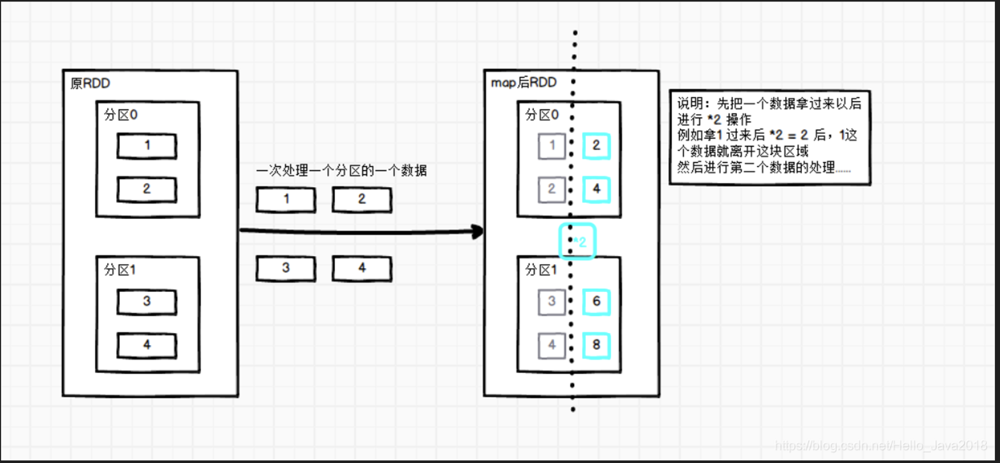
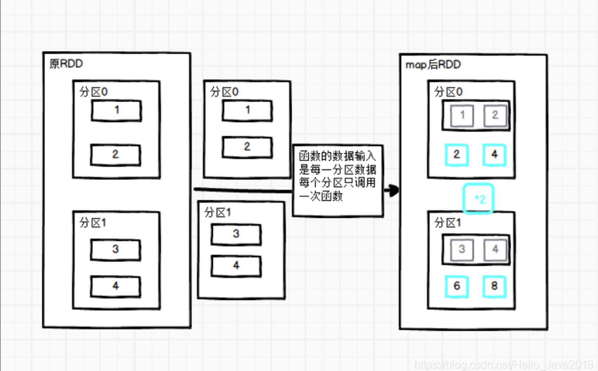
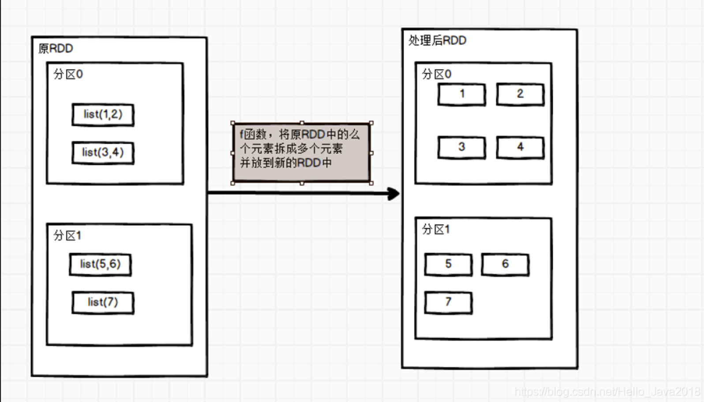
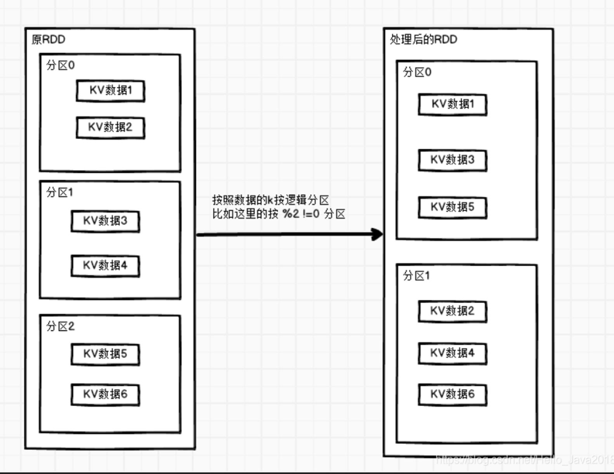

Spark 单value算子 1. map算子（改变结构就用map） 先看map函数 1 2 3 4 5 6 7 /** * Return a new RDD by applying a function to all elements of this RDD. */ def map[U: ClassTag ](f: T => U ): RDD[U] = withScope { val cleanF = sc.clean(f) new MapPartitionsRDD[U, T ](this, (context, pid, iter ) => iter.map(cleanF)) }
功能说明 参数f是一个函数，它可以接收一个参数。当某个RDD执行map方法时，会遍历该RDD中的每一个数据项，并依次应用f函数，从而产生一个新的RDD。即，这个新RDD中的每一个元素都是原来RDD中每一个元素依次应用f函数而得到的。
代码演示 1 2 3 4 5 6 7 8 9 10 11 12 13 14 15 16 val conf: SparkConf = new SparkConf() val sc: SparkContext = new SparkContext(conf) val rdd: RDD[Int] = sc.makeRDD(1 to 4 ,2 ) val mapRdd: RDD[Int] = rdd.map(_*2 ) mapRdd.collect().foreach(println) 结果： 2 4 6 8
关于分区 
图片中的说明：2 操作 2 = 2 后，1这个数据就离开这块区域
注意：map的分区数和RDD的分区数一致（看下面源码）
1 2 3 4 5 6 7 8 9 10 11 12 13 def map[U : ClassTag ](f: T => U ): RDD [U ] = withScope { val cleanF = sc.clean(f) new MapPartitionsRDD [U , T ](this, (context, pid, iter) => iter.map(cleanF)) } 往下走 override def getPartitions: Array [Partition ] = firstParent[T ].partitions 再往下走firstParent protected[spark] def firstParent[U : ClassTag ]: RDD [U ] = { dependencies.head.rdd.asInstanceOf[RDD [U ]] } 主要的是：firstParent[T ].partitions 这里
2. mapPartitions() 以分区为单位执行Map 先看mapPartitions函数 1 2 3 4 5 6 7 8 9 def mapPartitions[U: ClassTag]( f: Iterator [T] => Iterator [U], preservesPartitioning: Boolean = false ): RDD[U] = withScope { val cleanedF = sc.clean(f) new MapPartitionsRDD( this , (context: TaskContext, index: Int, iter: Iterator [T]) => cleanedF(iter), preservesPartitioning) }
功能说明 f: Iterator[T] => Iterator[U]：f函数把每个分区的数据分别放入到迭代器中（批处理）
preservesPartitioning: Boolean = false ：是否保留RDD的分区信息
功能：一次处理一个分区数据
代码演示 1 2 3 4 5 6 7 8 9 10 // 前面代码省略，直接从数据源开始 val rdd: RDD[Int] = sc.makeRDD(1 to 4 ，2) val mapRdd = rdd.mapPartitions(_.map(_*2)) mapRdd.collect().foreach(println) 结果： 2 4 6 8
关于分区 
分区说明
3. mapPartitionsWithIndex()带分区号 先看mapPartitionsWithIndex函数 1 2 3 4 def mapPartitionsWithIndex [U: ClassTag] ( f : (Int, Iterator[T]) => Iterator[U], preservesPartitioning : Boolean = false): RDD [U]
功能说明 f: (Int, Iterator[T]) => Iterator[U]：f函数把每个分区的数据分别放入到迭代器中（批处理）并且加上分区号
preservesPartitioning: Boolean = false ：是否保留RDD的分区信息
功能：比mapPartitions多一个整数参数表示分区号
代码演示 1 2 3 4 5 6 7 8 9 10 11 12 val rdd: RDD[Int] = sc.makeRDD(1 to 4 , 2 ) val mapRdd = rdd.mapPartitionsWithIndex((index , items ) => { items .map ((index , _)) }) // 打印修改后的RDD中数据 mapRdd.collect().foreach(println) 结果： (0 ,1 ) (0 ,2 ) (1 ,3 ) (1 ,4 )
4. flatMap()扁平化 先看flatMap函数 1 2 3 4 def flatMap[U: ClassTag ](f: T => TraversableOnce[U] ): RDD[U] = withScope { val cleanF = sc.clean(f) new MapPartitionsRDD[U, T](this, (context, pid, iter) => iter.flatMap(cleanF)) }
功能说明 
与map操作类似，将RDD中的每一个元素通过应用f函数依次转换为新的元素，并封装到RDD中。
区别：在flatMap操作中，f函数的返回值是一个集合，并且会将每一个该集合中的元素拆分出来放到新的RDD中。
代码演示 1 2 3 4 5 6 7 8 9 10 11 12 13 14 val listRDD=sc.makeRDD(List(List(1,2),List(3,4),List(5,6),List(7)), 2 ) val mapRdd: RDD[Int]= listRDD.flatMap(item=>item) // 打印修改后的RDD中数据 mapRdd.collect().foreach(println) 结果： 1 2 3 4 5 6 7
5. glom()分区转换数组 先看glom函数 1 2 3 def glom(): RDD[Array[T]] = withScope { new MapPartitionsRDD[Array[T ], T](this, (context, pid, iter) => Iterator(iter.toArray)) }
功能说明 该操作将RDD中每一个分区变成一个数组，并放置在新的RDD中，数组中元素的类型与原分区中元素类型一致。
代码演示（求两个分区中的最大值） 1 2 3 4 5 6 7 8 9 val sc: SparkContext = new SparkContext(conf) val rdd = sc.makeRDD(1 to 4 , 2 ) val mapRdd = rdd.glom().map(_.max) mapRdd.collect().foreach(println) 结果： 2 4
6. groupBy()分组 先看groupBy函数 1 2 3 def groupBy[K ](f: T => K )(implicit kt: ClassTag[K]): RDD[(K, Iterable[T])] = withScope { groupBy[K](f, defaultPartitioner(this)) }
功能说明 分组，按照传入函数的返回值进行分组。将相同的key对应的值放入一个迭代器。
代码演示 （按照元素模以2的值进行分组） 1 2 3 4 5 6 7 8 val rdd = sc.makeRDD val mapRdd: RDD[] = rdd.groupBy mapRdd.collect.foreach 结果： ) )
7. sample()采样 先看sample函数 1 2 3 4 def sample ( withReplacement : Boolean, fraction : Double, seed : Long = Utils.random.nextLong): RDD [T]
功能说明 withReplacement： true为有放回的抽样，false为无放回的抽样。
fraction表示：以指定的随机种子随机抽样出数量为fraction的数据。
seed表示：指定随机数生成器种子。
两个算法介绍：
1 2 3 4 5 6 7 8 9 10 11 12 抽取数据不放回（伯努利算法） val sampleRDD: RDD[Int ] = dataRDD.sample(false , 0.5 ) 伯努利算法：又叫0 、1 分布。例如扔硬币，要么正面，要么反面。 具体实现：根据种子和随机算法算出一个数和第二个参数设置几率比较，小于第二个参数要，大于不要 第一个参数：抽取的数据是否放回，false ：不放回 第二个参数：抽取的几率，范围在[0 ,1 ]之间,0 ：全不取；1 ：全取； 第三个参数：随机数种子 抽取数据放回（泊松算法） val sampleRDD1: RDD[Int ] = dataRDD.sample(true , 2 ) 第一个参数：抽取的数据是否放回，true ：放回；false ：不放回 第二个参数：重复数据的几率，范围大于等于0 .表示每一个元素被期望抽取到的次数 第三个参数：随机数种子
代码演示 1 2 3 4 5 6 7 8 9 10 11 12 13 14 15 16 17 18 19 20 21 22 23 24 25 26 27 28 29 30 31 val dataRDD: RDD[Int] = sc.makeRDD(List(1,2,3,4,5,6)) val mapRdd: RDD[Int] = dataRDD.sample(false, 0.5 ) // 打印修改后的RDD中数据 mapRdd.collect().foreach(println) 结果： 3 5 6 val sc: SparkContext = new SparkContext(conf) val dataRDD: RDD[Int] = sc.makeRDD(List(1,2,3,4,5,6)) val mapRdd: RDD[Int] = dataRDD.sample(true, 2 ) 结果： 1 1 1 1 1 3 3 3 4 5 5 5 5 5 6 6
8. distinct()去重 先看distinct函数 1 2 3 4 5 6 7 8 9 10 def distinct(numPartitions: Int)(implicit ord: Ordering[T] = null ): RDD[T] = withScope { map(x =>(x, null )).reduceByKey ((x, y ) => x, numPartitions).map(_._1) } def distinct(): RDD[T] = withScope { distinct(partitions.length) }
功能说明 对内部的元素去重，distinct后会生成与原RDD分区个数不一致的分区数。
代码演示 1 2 3 4 5 6 7 8 9 10 val sc: SparkContext = new SparkContext(conf) val distinctRdd: RDD[Int] = sc.makeRDD(List(1,2,1,5,2,9,6,1)) distinctRdd.distinct(2).collect().foreach(println) 结果 6 2 1 9 5
distinct()实现的源码 1 2 3 4 5 def distinct(numPartitions: Int)(implicit ord: Ordering[T] = null ): RDD[T] = withScope { map(x =>(x, null )).reduceByKey ((x, y ) => x, numPartitions).map(_._1) } 也就是这个玩意： map(x =>(x, null )).reduceByKey ((x, y ) => x, numPartitions).map(_._1)
9. coalesce()合并分区 先看coalesce函数 1 2 3 4 def coalesce(numPartitions: Int , shuffle: Boolean = false, partitionCoalescer: Option[PartitionCoalescer] = Option.empty) (implicit ord: Ordering[T] = null) : RDD[T]
功能说明 功能说明：缩减分区数，用于大数据集过滤后，提高小数据集的执行效率。
默认false不执行shuffle。
代码演示 1 2 3 4 5 6 7 8 9 10 11 val rdd: RDD[Int] = sc.makeRDD(Array(1,2,3,4),4) val mapRdd: RDD[Int] = rdd.coalesce(2) mapRdd.mapPartitionsWithIndex{ (index ,values )=>values .map ((index ,_)) }.collect().foreach(println) 结果 (0 ,1 ) (0 ,2 ) (1 ,3 ) (1 ,4 )
无shuffle 1 2 3 4 5 6 设置2 个分区后的结果： (0 ,1 ) (0 ,2 ) (1 ,3 ) (1 ,4 ) 设置3 个分区后的结果： (0 ,1 ) (1 ,2 ) (2 ,3 ) (2 ,4 ) 设置4 个或者以上 (0 ,1 ) (1 ,2 ) (2 ,3 ) (3 ,4 )
设置shuffle 1 2 3 4 5 6 7 8 9 10 11 12 13 14 15 16 17 18 19 20 21 22 val rdd: RDD[Int ] = sc.makeRDD(Array (1 ,2 ,3 ,4 ),4 ) val mapRdd: RDD[Int ] = rdd.coalesce(2 ，true ) mapRdd.mapPartitionsWithIndex{ (index,values)=>values.map((index,_)) }.collect().foreach (println) 结果 (0 ,1 ) (0 ,2 ) (0 ,3 ) (0 ,4 ) 设置true 后开启shuffle 设置1 ,2 后的结果 (0 ,1 ) (0 ,2 ) (0 ,3 ) (0 ,4 ) 设置3 后的结果 (0 ,1 ) (1 ,2 ) (1 ,3 ) (2 ,4 ) 设置4 后的结果 (3 ,1 ) (3 ,2 ) (3 ,3 ) (3 ,4 ) ....
源码 1 2 3 4 5 6 7 8 9 10 11 12 for (i <- 0 until maxPartitions) { val rangeStart = ((i .toLong * prev.partitions.length ) / maxPartitions).toInt val rangeEnd = (((i .toLong + 1 ) * prev.partitions.length ) / maxPartitions).toInt (rangeStart until rangeEnd).foreach{ j => groupArr(i ).partitions += prev.partitions(j ) } } 解释说明： maxPartitions：传进来的新分区数 prev.partitions：之前RDD的分区数 分区i 开始 = 分区号*前一个分区数 / 新的分区数 结束 =( 分区号+1 )*前一个分区数 / 新的分区数
10. repartition()重新分区（执行Shuffle） 先看repartition函数 1 2 3 def repartition(numPartitions: Int )(implicit ord: Ordering[T] = null): RDD[T] = withScope { coalesce(numPartitions, shuffle = true) }
功能说明 该操作内部其实执行的是coalesce操作，参数shuffle的默认值为true。无论是将分区数多的RDD转换为分区数少的RDD，还是将分区数少的RDD转换为分区数多的RDD，repartition操作都可以完成，因为无论如何都会经shuffle过程。
代码演示 1 2 3 4 5 6 7 8 9 10 11 12 13 14 15 val rdd: RDD[Int] = sc.makeRDD(Array(1,2,3,4,5,6,7,8),4) val mapRdd: RDD[Int] = rdd.repartition(8) mapRdd.mapPartitionsWithIndex{ (index ,values ) =>values .map ((index ,_)) }.collect().foreach(println) 结果 (6 ,1 ) (6 ,3 ) (6 ,5 ) (6 ,7 ) (7 ,2 ) (7 ,4 ) (7 ,6 ) (7 ,8 )
coalesce和repartition对比与区别 （1）coalesce重新分区，可以选择是否进行shuffle过程。由参数shuffle: Boolean = false/true决定。
（2）repartition实际上是调用的coalesce，进行shuffle。源码如下：
（3）coalesce一般为缩减分区，如果扩大分区，也不会增加分区总数，意义不大。
（4）repartition扩大分区执行shuffle，可以达到扩大分区的效果。
11. sortBy()排序 先看sortBy函数 1 2 3 4 def sortBy[K]( f: (T) => K, ascending: Boolean = true , numPartitions: Int = this.partitions.length)
功能说明 该操作用于排序数据。在排序之前，可以将数据通过f函数进行处理，之后按照f函数处理的结果进行排序，默认为正序排列。排序后新产生的RDD的分区数与原RDD的分区数一致。
代码演示 1 2 3 4 5 6 7 8 9 10 11 12 13 14 15 16 17 18 19 20 21 22 val rdd: RDD[Int ] = sc.makeRDD(Array (1 ,2 ,5 ,3 ,6 ,2 )) val mapRdd = rdd.sortBy(item=>item) mapRdd.collect().foreach (println) 结果 1 2 2 3 5 6 val rdd: RDD[(Int ,Int )] = sc.makeRDD(Array ((5 ,2 ),(5 ,3 ),(6 ,2 ))) val mapRdd = rdd.sortBy(item=>item) mapRdd.collect().foreach (println) 结果 (5 ,2 ) (5 ,3 ) (6 ,2 )
Spark key-value类型算子总结(图解和源码) 1. partitionBy()按照K重新分区 先看partitionBy函数 1 2 3 4 5 6 7 8 9 10 def partitionBy (partitioner: Partitioner) self .withScope { if (keyClass.isArray && partitioner.isInstanceOf[HashPartitioner]) { throw new SparkException("HashPartitioner cannot partition array keys." ) } if (self .partitioner == Some(partitioner)) { self } else { new ShuffledRDD[K, V, V](self , partitioner) } }
功能说明 将RDD[K,V]中的K按照指定Partitioner重新进行分区。
如果原有的RDD和新的RDD是一致的话就不进行分区，否则会产生Shuffle过程。

代码演示（按HashPartitioner分区） 1 2 3 4 5 6 7 8 9 10 val rdd: RDD [(Int , String )] = sc.makeRDD(Array ((1 ,"aaa" ),(2 ,"bbb" ),(3 ,"ccc" )),3 ) val mapRdd: RDD [(Int , String )] = rdd.partitionBy(new org .apache.spark.HashPartitioner(2 )) mapRdd.mapPartitionsWithIndex{ (index,values)=>values.map((index,_ )) }.collect().foreach(println) 结果 (0 ,(2 ,bbb)) (1 ,(1 ,aaa)) (1 ,(3 ,ccc))
自定义分区规则 要实现自定义分区器，需要继承org.apache.spark.Partitioner类，并实现下面三个方法。
（1）numPartitions: Int:返回创建出来的分区数。
（2）getPartition(key: Any):
Int:返回给定键的分区编号(0到numPartitions-1)。
（3）equals():Java 判断相等性的标准方法。这个方法的实现非常重要，Spark需要用这个方法来检查你的分区器对象是否和其他分区器实例相同，这样Spark才可以判断两个RDD的分区方式是否相同。
1 2 3 4 5 6 7 8 9 10 11 12 13 14 15 16 17 18 19 20 21 22 23 24 25 26 27 28 29 val rdd: RDD [(Int , String )] = sc.makeRDD(Array ((1 ,"aaa" ),(2 ,"bbb" ),(3 ,"ccc" )),3 ) val mapRdd: RDD [(Int , String )] = rdd.partitionBy(new MyPartition (2 )) mapRdd.mapPartitionsWithIndex{ (index,values)=>values.map((index,_)) }.collect().foreach(println) class MyPartition (num:Int ) extends Partitioner override def numPartitions Int = num override def getPartition Any ): Int = { if (key.isInstanceOf[Int ]){ val i: Int = key.asInstanceOf[Int ] if (i%2 ==0 ){ 0 }else { 1 } }else { 0 } } } 结果 (0 ,(2 ,bbb)) (1 ,(1 ,aaa)) (1 ,(3 ,ccc))
2. reduceByKey()按照K聚合V 先看reduceByKey函数 1 2 3 4 5 def reduceByKey(func : (V, V) V ): RDD [(K , V )] = self .withScope { reduceByKey(defaultPartitioner(self ), func ) } def reduceByKey (func : (V, V) V , numPartitions: Int ): RDD [(K , V )]
功能说明 该操作可以将RDD[K,V]中的元素按照相同的K对V进行聚合。其存在多种重载形式，还可以设置新RDD的分区数。
代码演示 1 2 3 4 5 6 7 8 val rdd = sc.makeRDD(List(("a" ,1 ),("b" ,5 ),("a" ,5 ),("b" ,2 ))) val mapRdd: RDD[(String , Intrdd .reduceByKey ((v1,v2 )=>v1+v2 ) // 打印修改后的RDD 中数据 mapRdd .collect () .foreach (println ) 结果 (a,6 ) (b,7 )
3. groupByKey()按照K重新分组 先看groupByKey函数 1 2 3 4 5 def groupByKey () def groupByKey (numPartitions: Int) self .withScope { groupByKey(new HashPartitioner(numPartitions)) }
功能说明 groupByKey对每个key进行操作，但只生成一个seq，并不进行聚合。
代码演示 1 2 3 4 5 6 7 8 9 10 val rdd = sc.makeRDD(List (("a" ,1 ),("b" ,5 ),("a" ,5 ),("b" ,2 ))) val mapRdd: RDD[(String , Iterable [Int])] = rdd.groupByKey(2 ) mapRdd.mapPartitionsWithIndex{ (index,values)=>values.map((index,_)) }.collect().foreach(println) 结果 (0 ,(b,CompactBuffer(5 , 2 ))) (1 ,(a,CompactBuffer(1 , 5 )))
4. aggregateByKey()按照K处理分区内和分区间逻辑 先看aggregateByKey函数 1 2 3 4 def aggregateByKey[U: ClassTag ](zeroValue: U )(seqOp: (U, V) => U, combOp: (U, U) => U): RDD[(K, U)] = self.withScope { aggregateByKey(zeroValue, defaultPartitioner(self))(seqOp, combOp) }
功能说明 1）zeroValue（初始值）：给每一个分区中的每一种key一个初始值。
这个初始值的理解：
如何求最大值，所有的值为正数，设置为0，
如果有负值，设置为 负无穷，
这个初始值就是与第一个值进行比较，保证第一次对比下去。
（2）seqOp（分区内）：函数用于在每一个分区中用初始值逐步迭代value。
（3）combOp（分区间）：函数用于合并每个分区中的结果。
代码演示 1 2 3 4 5 6 7 8 val sc: SparkContext = new SparkContext (conf) val rdd: RDD [(String , Int )] = sc.makeRDD(List(("a" , 3 ), ("a" , 2 ), ("c" , 4 ), ("b" , 3 ), ("c" , 6 ), ("c" , 8 )), 2 ) val mapRdd: RDD [(String , Int )] = rdd.aggregateByKey(0 )(math.max(_ ,_ ),_ +_ ) 结果 (b,3 ) (a,3 ) (c,12 )
5. foldByKey()分区内和分区间相同的aggregateByKey() 先看foldByKey函数 1 2 3 4 def aggregateByKey[U: ClassTag ](zeroValue: U )(seqOp: (U, V) => U, combOp: (U, U) => U): RDD[(K, U)] = self.withScope { aggregateByKey(zeroValue, defaultPartitioner(self))(seqOp, combOp) }
功能说明 参数zeroValue：是一个初始化值，它可以是任意类型。
参数func：是一个函数，两个输入参数相同。
代码演示 1 2 3 4 5 6 7 val list = List(("a" ,1 ),("a" ,1 ),("a" ,1 ),("b" ,1 ),("b" ,1 ),("b" ,1 ),("b" ,1 ),("a" ,1 )) val rdd = sc.makeRDD(list ,2 ) rdd.foldByKey(0 )(_+_).collect().foreach(println) 结果 (b,4 ) (a,4 )
6. combineByKey()转换结构后分区内和分区间操作 先看combineByKey函数 1 2 3 4 5 6 def combineByKey[C]( createCombiner: V => C, mergeValue: (C, V) => mergeCombiners: (C, C) => combineByKeyWithClassTag(createCombiner, mergeValue, mergeCombiners)(null ) }
功能说明 （1）createCombiner（转换数据的结构）: combineByKey()
会遍历分区中的所有元素，因此每个元素的键要么还没有遇到过，要么就和之前的某个元素的键相同。如果这是一个新的元素，combineByKey()会使用一个叫作createCombiner()的函数来创建那个键对应的累加器的初始值。
（2）mergeValue（分区内）:
如果这是一个在处理当前分区之前已经遇到的键，它会使用mergeValue()方法将该键的累加器对应的当前值与这个新的值进行合并。
（3）mergeCombiners（分区间）:
由于每个分区都是独立处理的，因此对于同一个键可以有多个累加器。如果有两个或者更多的分区都有对应同一个键的累加器，就需要使用用户提供的 mergeCombiners()方法将各个分区的结果进行合并。
针对相同K，将V合并成一个集合
代码演示（计算每个key出现的次数以及可以对应值的总和，再相除得到结果） 1 2 3 4 5 6 7 8 9 10 11 val list : List [(String, Int )] = List (("a" , 88 ), ("b" , 95 ), ("a" , 91 ), ("b" , 93 ), ("a" , 95 ), ("b" , 98 )) val input: RDD[(String, Int )] = sc.makeRDD(list , 2 ) input.combineByKey( (_,1 ), (acc:(Int ,Int ),v)=>(acc._1+v,acc._2+1 ), (acc1:(Int ,Int ),acc2:(Int ,Int ))=>(acc1._1+acc2._1,acc1._2+acc2._2) ).map(item=>item._2._1/item._2._2.toDouble).collect().foreach (println) 结果 95.33333333333333 91.33333333333333
reduceByKey、foldByKey、aggregateByKey、combineByKey对比 reduceByKey的底层源码
1 2 3 4 5 def reduceByKey(partitioner: Partitioner, func: (V, V) => combineByKeyWithClassTag[V]((v: V) => } 第一个初始值不变，也即不用直接给出初始值，分区内和分区间的函数相同
foldByKey的底层源码
1 2 3 4 5 6 7 8 combineByKeyWithClassTag[V ]((v: V ) => cleanedFunc(createZero(), v), cleanedFunc, cleanedFunc, partitioner) 初始值和分区内和分区间的函数（逻辑）相同
aggregateByKey的底层源码
1 2 3 4 5 6 7 8 9 combineByKeyWithClassTag[U ]((v: V ) => cleanedSeqOp(createZero(), v), cleanedSeqOp, combOp, partitioner) 初始值和分区内处理逻辑一致 分区内和分区间的函数（逻辑）不相同
combineByKey的底层源码
1 2 3 4 5 6 7 8 def combineByKeyWithClassTag[C]( createCombiner: V => C, mergeValue: (C, V) => C, mergeCombiners: (C, C) => C)(implicit ct: ClassTag[C]): RDD[(K, C)] = self.withScope { combineByKeyWithClassTag(createCombiner, mergeValue, mergeCombiners, defaultPartitioner(self)) } 把第1 个值变成特定的结构
7. sortByKey()排序 先看sortByKey函数 1 2 3 4 5 6 7 8 9 def sortByKey( ascending: Boolean = true , numPartitions: Int = self .partitions.length) : RDD[(K, V)] = self .withScope { val part = new RangePartitioner(numPartitions, self , ascending) new ShuffledRDD[K, V, V](self , part) .setKeyOrdering(if (ascending) ordering else ordering.reverse) }
功能说明 在一个(K,V)的RDD上调用，K必须实现Ordered接口，返回一个按照key进行排序的(K,V)的RDD
ascending: Boolean = true 默认为升序
false为降序
代码演示 1 2 3 4 5 6 7 8 9 val rdd: RDD[] = sc.makeRDD,,,)) val mapRdd: RDD[] = rdd.sortByKey mapRdd.collect.foreach
8. mapValues()只对V进行操作 先看mapValues函数 1 2 3 4 5 6 def mapValues[U ](f: V => U ): RDD[(K, U)] = self.withScope { val cleanF = self.context.clean(f) new MapPartitionsRDD[(K, U), (K, V)](self, (context, pid, iter) => iter.map { case (k, v) => (k, cleanF(v)) }, preservesPartitioning = true) }
功能与代码演示 针对于(K,V)形式的类型只对V进行操作
1 2 3 4 5 6 7 8 9 10 val rdd: RDD[] = sc.makeRDD, , , )) val mapRdd: RDD[] = rdd.mapValues mapRdd.collect.foreach 结果
9. join()连接 先看join函数 1 2 3 def join[W ](other: RDD[(K, W )]): RDD[(K, (V, W))] = self.withScope { join(other, defaultPartitioner(self, other)) }
功能说明 在类型为(K,V)和(K,W)的RDD上调用，返回一个相同key对应的所有元素对在一起的(K,(V,W))的RDD。
代码演示 1 2 3 4 5 6 7 8 9 val rdd: RDD [(Int , String )] = sc.makeRDD(Array ((1 , "a" ), (2 , "b" ), (3 , "c" ))) val rdd1: RDD [(Int , Int )] = sc.makeRDD(Array ((1 , 4 ), (2 , 5 ), (4 , 6 ))) val mapRdd: RDD [(Int , (String , Int ))] = rdd.join(rdd1) mapRdd.collect().foreach(println) 结果 (1 ,(a,4 )) (2 ,(b,5 ))
10. cogroup()联合 先看cogroup函数 1 2 3 def cogroup[W ](other: RDD[(K, W )]): RDD[(K, (Iterable[V], Iterable[W]))] = self.withScope { cogroup(other, defaultPartitioner(self, other)) }
功能说明 在类型为(K,V)和(K,W)的RDD上调用，返回一个(K,(Iterable,Iterable))类型的RDD。
代码演示 1 2 3 4 5 6 7 8 val rdd: RDD[] = sc.makeRDD,,)) val rdd1 : RDD[] = sc.makeRDD,,)) rdd.cogroup.collect.foreach 结果 ,CompactBuffer)) ,CompactBuffer)) ,CompactBuffer))